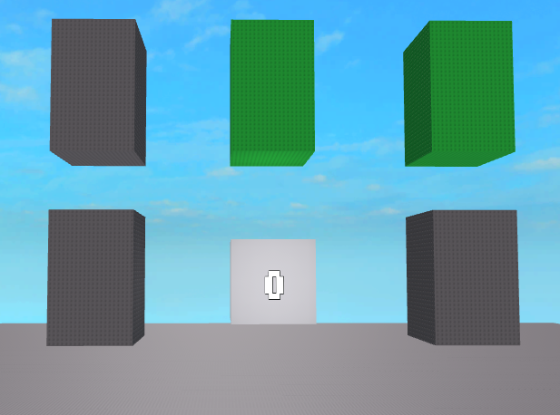

print("hello world")
i am TossyNike
-cool guy
-roblox dev
-barely knows any python
-knows a bit of hmtl
cube clicker files (most of the others are deleted)

titlecube.png
ballJappy.png
earth.png
something i made using p5.min.js